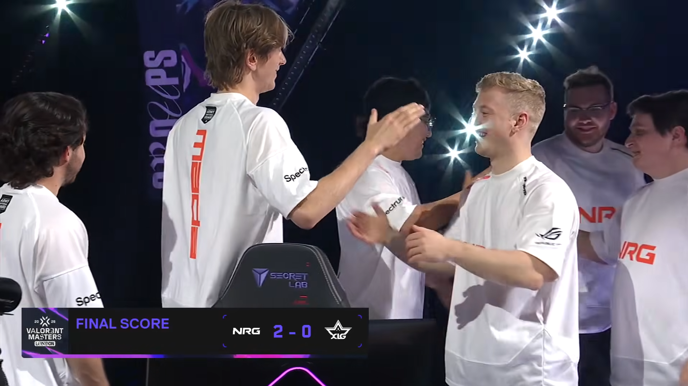
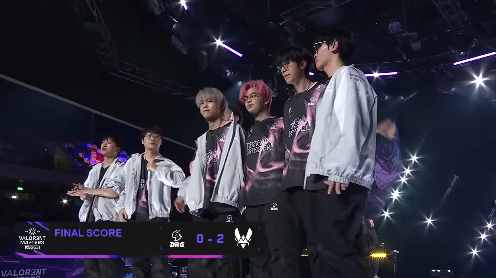
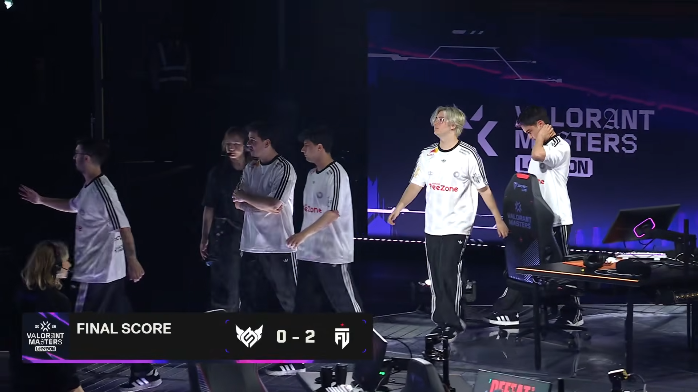
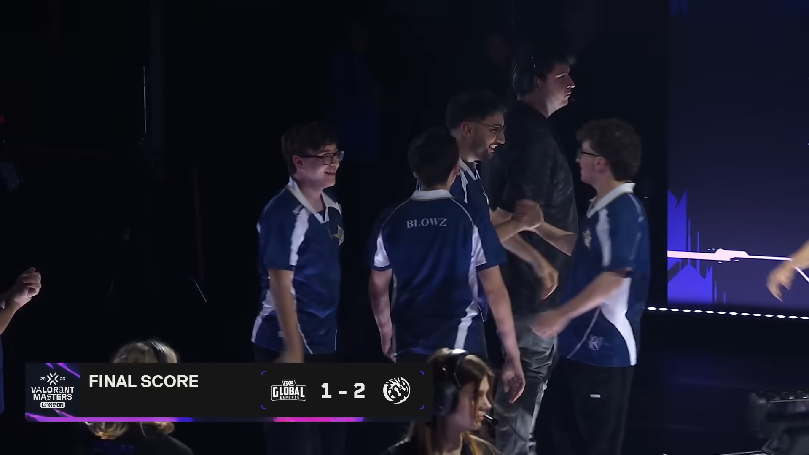
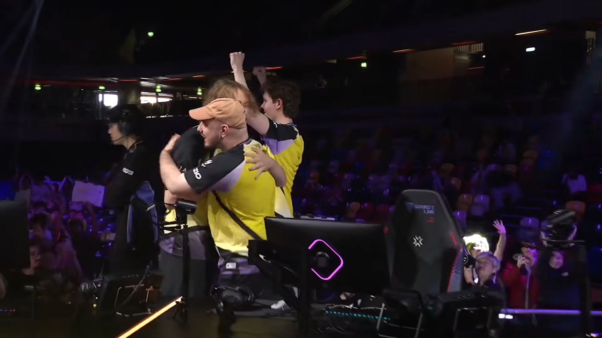
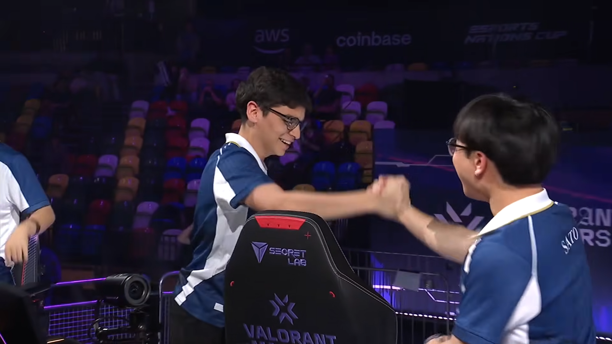
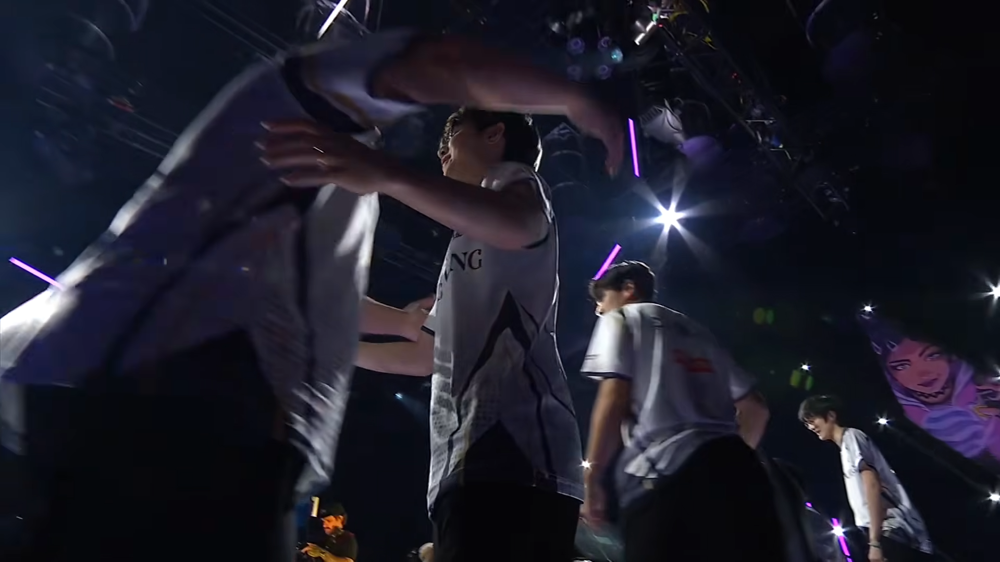
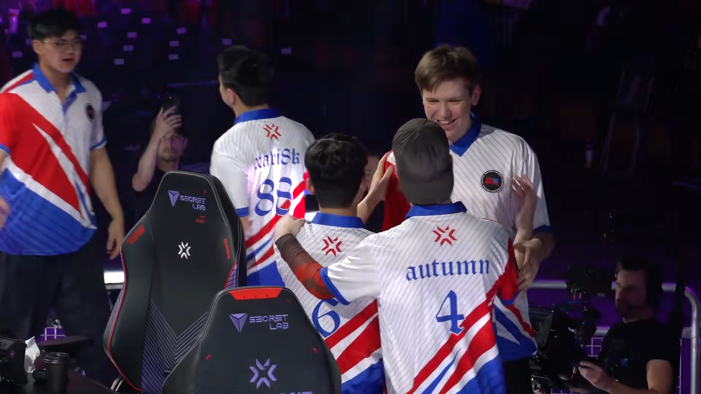
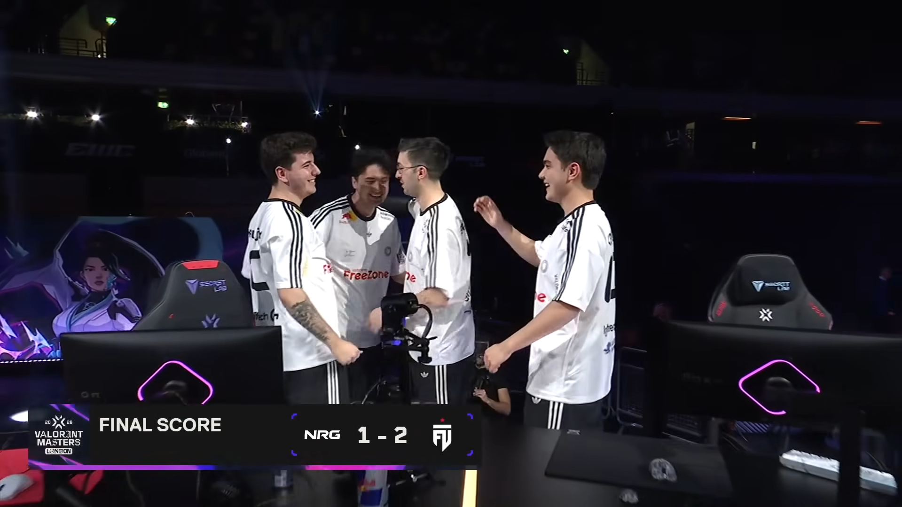
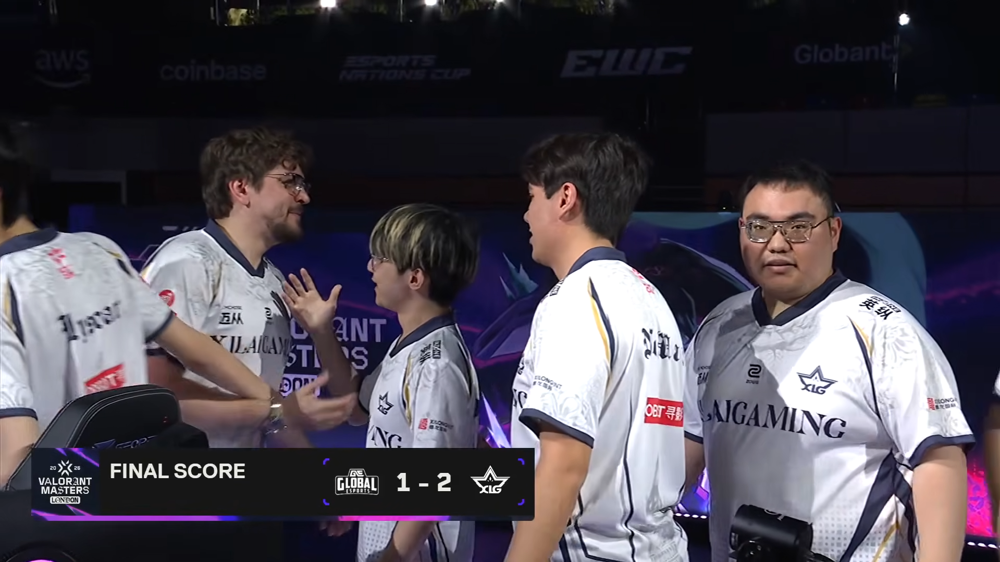

NRG opened their Masters London campaign with a confident victory over XLG. Their coordinated executes and disciplined defensive setups allowed them to maintain control throughout the series. Although XLG showed flashes of brilliance and managed to contest several crucial rounds, NRG consistently found answers in the mid-round and closed out both maps without allowing the Chinese representatives to gain momentum. The win placed NRG in the 1–0 pool and immediately established them as a dangerous contender in the Swiss Stage.

Vitality delivered one of the most dominant performances of Round 1, completely controlling the pace against Dragon Ranger Gaming. Their utility usage and coordinated site hits repeatedly overwhelmed DRG’s defensive setups, leaving little room for recovery once rounds began. DRG attempted to respond through aggressive plays and early duels, but Vitality’s structure and trading discipline made it difficult for them to string rounds together. The European squad’s confidence and map control stood out clearly, marking them as one of the early favorites in the Swiss Stage.

FUT Esports dominated Full Sense with a clean and clinical performance that never really allowed their opponents to settle into the series. From the first map, FUT’s fast-paced attacks and sharp site executions forced Full Sense into constant reactive play. Full Sense showed resilience in isolated rounds, but they struggled heavily in post-plant scenarios and defensive rotations. FUT’s coordination and trading efficiency ensured that even when rounds looked competitive early, they were consistently closed out in their favor.

This was one of the most competitive series of the opening round, with both teams trading momentum throughout the maps. Global Esports started strong, taking control early through disciplined defaults and sharp aim duels. However, Leviatán adjusted after the first map, increasing their aggression in mid-rounds and improving their retake setups. The final map saw Leviatán fully take over the pace of play, with better clutch conversion and stronger defensive reads ultimately sealing the series. Global pushed them hard, but Leviatán's adaptability proved decisive.

A heavyweight clash between two unbeaten teams, this series showed both tactical depth and mechanical firepower. FUT took control early with structured defaults and strong duel wins, punishing Vitality’s slower starts. However, Vitality responded by tightening their defense and increasing their aggression in key choke points. The final map became a back-and-forth battle, but Vitality’s clutch consistency and superior late-round coordination allowed them to edge out FUT. The win pushed Vitality closer to a playoff qualification spot.

NRG and Leviatán delivered a tense series that swung heavily on momentum shifts. NRG started strong, taking the opening map with disciplined control and solid defensive holds. Leviatán bounced back hard in the second map, overwhelming NRG with faster executes and sharper mid-round calls. The decider map was tightly contested, but Leviatán’s ability to win crucial clutch rounds and punish overextensions gave them the edge. NRG fought evenly throughout, but small mistakes in key rounds proved costly.

XLG bounced back from their opening loss with a clean and controlled victory over Dragon Ranger Gaming. DRG struggled to find consistent entry success, often getting stalled early in rounds due to strong utility setups from XLG. On the other side, XLG’s structured attacks and disciplined post-plant positioning allowed them to maintain control throughout both maps. The series was relatively one-sided, with XLG showing clearer adaptation compared to their earlier performance in the tournament.

Global Esports survived elimination in a hard-fought series against Full Sense. After dropping the first map, Global adjusted their defensive setups and became much more effective in shutting down Full Sense’s fast-paced attacks. Full Sense kept the series competitive through aggressive plays and strong aim duels, but Global’s improved mid-round discipline and clutch wins turned the momentum. The final map saw Global fully take control, securing their survival in the Swiss Stage.

In a high-pressure elimination match, FUT Esports edged out NRG in a closely contested series. NRG started strong, taking the opening map with structured play and confident duels. However, FUT slowly adapted, increasing their mid-round aggression and exploiting gaps in NRG’s defensive rotations. The final map was extremely tight, but FUT’s ability to win crucial clutch rounds under pressure made the difference. NRG had chances to close it out, but missed opportunities in late rounds proved decisive.

XLG completed their Swiss Stage comeback with a hard-fought win over Global Esports. Global started the series stronger, taking the first map through disciplined control and solid defensive setups. XLG responded by speeding up their tempo, forcing more chaotic engagements that favored their duelists. As the series progressed, XLG’s confidence grew, and they were able to close out the final map with stronger site executions and better clutch conversions, securing their playoff qualification.